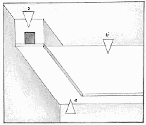
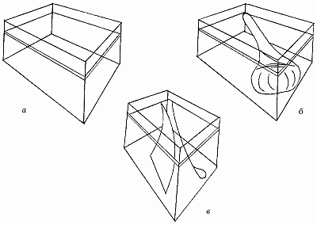

Натяжные потолки фирмы „Mondea“.

Технология монтажа потолков фирмы „Mondea“ (Голландия) отличается от установки потолочных систем других известных фирм—производителей.
Заказать потолок в монтажной фирме можно заранее, не дожидаясь окончания ремонтных работ в доме. Представители фирмы „Barrisol“ требуют обязательного окончания ремонта стен в доме, поскольку замеры производят с высокой точностью, а полотно нужной формы изготавливают заранее.
Второе преимущество использования голландских потолков – возможность натягивания полотна площадью более 200 м2, что достигается ввариванием с обратной стороны потолков необходимого количества металлических тросов, одной стороной выходящих на кронштейны, другой – на лебедки.
При использовании потолочных систем французских фирм во избежание провисания следует натягивать полотна площадью до 50 м2, а при большей площади использовать разделительный багет.
Натяжные потолки фирмы „Mondea“ могут быть установлены практически в любом помещении (рис. 22).

Рис. 22. Устройство натяжного потолка „Mondea": а – крепежный профиль; б – полотно; в – багет.
Полотно голландской фирмы отличается следующими характеристиками:
– герметичность;
– пыленепроницаемость;
– огнестойкость;
– не требует особого ухода;
– холодостойкость;
– влагостойкость;
– теплостойкость;
– не подвержено воздействию грибков и бактерий.
Таким образом, можно заключить, что на потолке с таким покрытием вы никогда не увидите темных сырых пятен или плесени.
Монтаж натяжного потолка „Mondea“Технология установки потолка голландской фирмы „Mondea“ уникальна прежде всего свой простотой (рис. 23).

Рис. 23. Монтаж натяжного потолка „Mondea": а – установка багета; б – развертывание полотна; б – крепление углов.
На стене или потолке устанавливают специальные крепежные профили (поверхность стен должна быть уже окрашенной или оклеенной обоями). Второй этап – развертывание полотна. Здесь вам понадобится помощник, а еще лучше – два. Несмотря на то что полотно достаточно легкое, развертывать его нужно очень осторожно.
Третий этап: натягивают полотно и закрепляют его с помощью крепежных профилей – ваш натяжной потолок готов.
Полотно натяжного потолка можно смонтировать примерно за 1–2 дня.